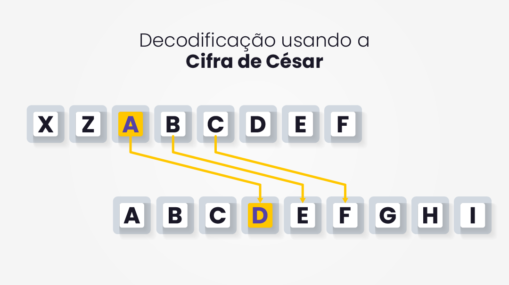
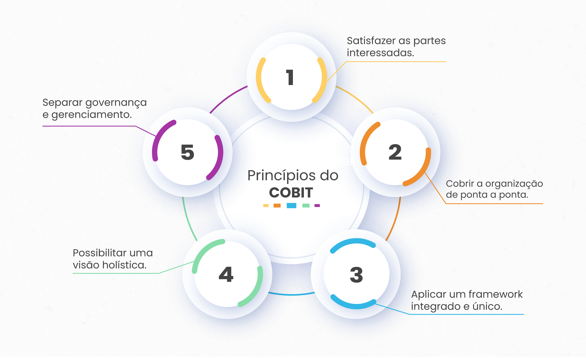

Aplicar técnicas de Segurança da Informação.
Vamos iniciar os estudos!
PlayPor que é importante investir no conhecimento e na aplicação de estratégias de segurança da informação?
A segurança da informação enfrenta uma série de desafios complexos e em constante evolução. Entre os principais, destacam-se: a ameaça crescente de ciberataques, que vão desde ataques de phishing e malware até invasões avançadas; a proteção de dados sensíveis e privacidade em um mundo cada vez mais interconectado e com uso intensivo de dados; a necessidade de equilibrar a conveniência do acesso à informação com medidas robustas de autenticação e controle de acesso; a falta de conscientização e treinamento adequado dos usuários, que frequentemente são o elo mais fraco da cadeia de segurança; e a garantia de conformidade com regulamentações e leis relevantes, à medida que as normas e exigências governamentais se tornam mais rigorosas.
Abordar esses desafios requer abordagens integradas, tecnologias avançadas e uma cultura de segurança proativa para proteger ativos digitais e salvaguardar a confiança dos usuários e organizações em meio a um ambiente digital em constante mudança.
Imagine você guardando todos os seus segredos em um diário, e para protegê-los, você coloca uma fechadura nesse diário, esconde ele em um lugar seguro, e apenas algumas pessoas de confiança têm a chave para abrir. Segurança da informação é mais ou menos isso, mas aplicada aos dados e sistemas de uma organização.
No cenário tecnológico dos jogos digitais, a proteção de dados pessoais assume papel crucial. Por isso, enquanto profissionais, é de suma importância abordar estratégias de proteção e criar experiências inovadoras mantendo a integridade e privacidade dos dados dos usuários. Um mergulho essencial para entender e aplicar medidas de proteção no desenvolvimento de jogos.
Observe a imagem a seguir que ilustra melhor situações desse tipo.
![A figura apresenta uma tirinha cômica feita pelo vidadesuporte.com.br. A imagem ilustra alguém que sempre clica em links que oferecem vantagens duvidosas, um péssimo hábito que compromete a segurança da informação. Diálogo – No quadro 1, um homem está ao telefone, e a pessoa que está do outro lado da linha fala “Eu sei que já te dei muito trabalho. Como daquela vez em que um vírus se espalhou pela rede depois que eu abri o arquivo foto.jpg.exe”. No quadro 2, a pessoa do outro lado da linha contínua “E daquela outra quando as suas férias foram interrompidas porque informei o número do meu cartão de crédito ao príncipe da Nigéria”. No quadro 3, a pessoa do outro lado da linha fala “Mas, para te compensar por tudo, vou te dar um presente: um playstation”, o homem pergunta admirado “você comprou um playstation pra mim?”. No quadro 4, a pessoa do outro lado da linha diz finalmente “não, ganhei clicando no link de uma promoção da microsoft que recebi pelo whatsapp.](./img/ue1/imagem1.jpg)
Imagine que seus dados pessoais são como um tesouro que você tem. Esse tesouro pode ser tudo, desde seu nome, endereço, até fotos e mensagens. Agora, não seria legal se alguém pegasse esse tesouro sem sua permissão, certo? E é aí que entra a proteção de dados pessoais.
Então, empresas e governos estão trabalhando duro para proteger seu tesouro. Eles estão construindo fortalezas mais fortes, criando mapas mais seguros e treinando marinheiros para serem mais espertos. Tudo isso para garantir que seu tesouro - seus dados pessoais - esteja sempre seguro. Alguns pontos que você precisa estar atento:
Roubo de contas: Usuários de sistemas e jogos podem ser vítimas de roubo de contas, em que invasores obtêm acesso não autorizado às contas, muitas vezes por meio de phishing, keyloggers ou ataques de força bruta.
Vazamento de dados: O vazamento de dados é um perigo real e impactante na era digital, como exemplificado pelo caso da Ashley Madison. O vazamento de informações pessoais de milhões de usuários deste site de relacionamentos extraconjugais revelou não apenas suas atividades secretas, mas também expôs suas identidades.
Denial of Service (DoS): Ataques de negação de serviço são comuns em sites e jogos online, nos quais os servidores são sobrecarregados com um grande volume de tráfego malicioso, tornando o acesso impossível para os usuários legítimos.
Phishing e golpes: Usuários de sistemas podem ser alvo de ataques de phishing, nos quais são enganados por e-mails, mensagens ou sites falsos que se passam por plataformas legítimas. Esses ataques visam obter informações pessoais, como senhas, ou induzir as pessoas a realizar ações prejudiciais, como baixar arquivos maliciosos.
LEI GERAL DE PROTEÇÃO DE DADOS (LGPD) (LEI Nº 13.709, DE 14 DE AGOSTO DE 2018)
A Lei Geral de Proteção de Dados, ou LGPD, é como uma regra que existe para proteger as informações pessoais de cada pessoa. Quando você compartilha seu nome, sua foto ou qualquer coisa que possa identificar quem você é na internet ou com lojas e serviços, essa lei ajuda a garantir que essas informações sejam usadas de maneira segura e só para aquilo que você concordou. É como se fosse uma armadura digital que protege suas informações pessoais de serem usadas de forma errada ou sem a sua permissão.
DEFINIÇÕES MAIS IMPORTANTES
Dado pessoal: Informação relacionada a pessoa natural identificada ou identificável.
Dado pessoal sensível: Dados sobre origem racial ou étnica, convicção religiosa, opinião política, filiação a sindicato ou a organização de caráter religioso, filosófico ou político, dado referente à saúde ou à vida sexual, dado genético ou biométrico.
Tratamento: Toda operação realizada com dados pessoais, como coleta, produção, recepção, classificação, utilização, acesso, reprodução, transmissão, distribuição, processamento, arquivamento, armazenamento, eliminação, avaliação ou controle da informação, modificação, comunicação, transferência, difusão ou extração.
Imagine que você está criando um jogo digital e quer que ele seja um sucesso entre os jogadores. Agora, com a LGPD, você precisa pensar em como lidar com as informações dos jogadores desde o início.
Por exemplo, se os jogadores precisam criar uma conta no seu jogo, você vai pedir o nome deles, e-mail, talvez até a idade. A LGPD diz que você precisa ser claro com os jogadores sobre por que está pedindo esses dados e o que vai fazer com eles. E mais, você só pode pedir informações que são realmente necessárias para o jogo funcionar.
Aqui estão algumas coisas que você, como desenvolvedor de jogos, precisa fazer devido à LGPD:
Pedir permissão: Você tem que explicar para os jogadores por que precisa dos dados deles e pedir permissão para usar esses dados. Se eles são menores de idade, você vai precisar da permissão dos pais ou responsáveis.
Proteger os Dados: Você tem que garantir que as informações dos jogadores estejam seguras, para que ninguém não autorizado possa pegá-las.
Ser transparente: Se os jogadores quiserem saber quais dados você tem sobre eles, você precisa mostrar. E se eles pedirem para apagar ou mudar alguma coisa, você tem que fazer isso.
Pensar Antes de Compartilhar: Se você quiser compartilhar os dados dos jogadores com outra empresa, como um estúdio que ajuda a melhorar o jogo, você precisa ter certeza de que essa empresa também vai seguir as regras da LGPD.
Ter um 'Encarregado': É uma boa ideia ter alguém na equipe que entenda bem essas regras e possa garantir que o jogo esteja seguindo todas elas.
Então, a LGPD faz com que você pense mais sobre como e por que está usando as informações dos jogadores. Isso pode dar um pouco mais de trabalho, mas também ajuda a criar confiança com os jogadores, porque eles sabem que o jogo deles está protegendo as informações deles. E jogadores que confiam no jogo são mais propensos a continuar jogando e a recomendar para os amigos.
Para testar os seus conhecimentos, te desafio a colocar a mão na massa. Observe as orientações abaixo e vamos nessa!
| TESTE OS SEUS CONHECIMENTOS |
|---|
| Levará em média: 25min |
|
O desafio é:
Projetar uma tela de registro para um jogo fictício estilo
Battle Royale no qual o jogador pode interagir com outros
usuários para formar equipes e lutar contra hordas inimigas.
Deve-se incluir campos para coletar informações essenciais, como nome de usuário, e-mail e senha. Após projetar a tela, identifique quais dados são pessoais e sensíveis explicando como eles podem ser protegidos durante a transmissão e armazenamento. |
| Em seguida: Identifique as informações sensíveis e explique, em um pequeno texto, a necessidade do uso de cada dado. Você também pode aproveitar para trocar ideias com outros estudantes ou profissionais da área e incrementar sua ideia. |
Como você já sabe, o não cumprimento das disposições da LGPD pode resultar em sanções e penalidades, destacando a importância de os desenvolvedores estarem alinhados com as práticas de proteção de dados pessoais estabelecidas por essa legislação. Sabendo disso, responda:
QUESTÃO 1
Sobre a coleta de dados em jogos digitais, o que a LGPD exige dos desenvolvedores?
Se uma empresa sofrer um vazamento de dados, as consequências podem ser significativas, tanto em termos legais quanto em termos de reputação. Algumas das principais repercussões incluem:
Sanções Legais: Dependendo da legislação de proteção de dados do país em que a empresa opera, pode haver penalidades legais substanciais por violações de privacidade. Por exemplo, a Lei Geral de Proteção de Dados (LGPD) no Brasil e o Regulamento Geral de Proteção de Dados (GDPR) na União Europeia estabelecem multas significativas para empresas que não protegem adequadamente os dados pessoais.
Danos à Reputação: Um vazamento de dados pode resultar em uma perda significativa de confiança por parte dos clientes e do público em geral. Isso pode afetar a reputação da empresa a longo prazo, prejudicando a sua imagem de marca e impactando negativamente nas relações comerciais.
Perda de Clientes: Os clientes podem optar por encerrar seus relacionamentos com a empresa se sentirem que a segurança de seus dados não está garantida. Isso pode resultar em uma perda substancial de receita e na dificuldade de conquistar novos clientes.
Ações Judiciais: Indivíduos afetados pelo vazamento de dados podem entrar com ações judiciais contra a empresa, buscando compensação por danos financeiros ou morais causados pela exposição não autorizada de suas informações pessoais.
Custos Operacionais Adicionais: A empresa pode enfrentar custos significativos para investigar e remediar o vazamento de dados, implementar medidas de segurança adicionais e cumprir requisitos legais, como notificar autoridades reguladoras e indivíduos afetados.
Requisitos Regulatórios: As autoridades regulatórias podem impor requisitos específicos à empresa afetada, como auditorias de segurança de dados, para garantir que medidas apropriadas sejam tomadas para evitar futuros incidentes.
Portanto, é crucial que as empresas adotem práticas robustas de segurança de dados, implementem medidas preventivas e estejam preparadas para responder eficientemente em caso de vazamento de dados, a fim de minimizar as consequências adversas.
Agora que compreendemos as sérias consequências de um vazamento de dados para uma empresa, convido você a responder a seguinte pergunta:
QUESTÃO 2
Qual dos seguintes cenários é um exemplo de um ataque de negação de serviço (DoS)?
Os perfis de usuários nos jogos desempenham um papel fundamental na experiência do jogador, pois proporcionam personalização e progresso individualizado. Eles permitem que os jogadores acompanhem seu desenvolvimento, conquistas e desafios superados, criando um senso de realização e motivação contínua.
Além disso, os perfis de usuários facilitam a interação social dentro dos jogos, promovendo a formação de comunidades e amizades virtuais. Com isso, tornam-se uma ferramenta poderosa para engajar os jogadores e garantir que eles se sintam parte de um mundo virtual envolvente e significativo. Para melhor exemplificar esse conteúdo, assista ao vídeo a seguir:
É importante identificar os diferentes perfis de usuários em um sistema de informação, como administradores, funcionários, clientes, fornecedores, etc. Cada perfil pode ter necessidades e privilégios específicos, exigindo diferentes controles de segurança para proteger as informações.
Cada perfil de usuário pode ter necessidades específicas de segurança. Por exemplo, os administradores podem precisar de acesso privilegiado para gerenciar o sistema, enquanto os clientes podem exigir proteção de dados pessoais. Compreender as necessidades de segurança de cada perfil é fundamental para implementar os controles apropriados e garantir a proteção adequada das informações.
Gerenciamento de acesso e autenticação de usuários:
O gerenciamento de acesso é essencial para garantir que apenas usuários autorizados tenham acesso às informações. Isso inclui a implementação de controles de autenticação robustos, como senhas fortes, autenticação de dois fatores e gerenciamento adequado de credenciais. Além disso, é necessário ter um processo de concessão e revogação de privilégios de acesso para garantir que os usuários tenham apenas as permissões necessárias para desempenhar suas funções.
Segurança em dispositivos e contas de usuários:
A segurança dos dispositivos e das contas dos usuários é crucial para proteger as informações. Isso envolve a aplicação de medidas como criptografia de dados, atualizações regulares de software, proteção contra malware e acesso seguro a partir de dispositivos remotos. Além disso, é importante incentivar os usuários a adotar boas práticas de segurança, como não compartilhar senhas, fazer backup regularmente e utilizar soluções de segurança confiáveis.
A educação e conscientização dos usuários são elementos-chave na segurança da informação. Os usuários devem ser treinados para reconhecer ameaças, como phishing, engenharia social e práticas inseguras. Eles devem ser informados sobre as políticas de segurança, os riscos associados a comportamentos inadequados e as medidas que devem tomar para proteger as informações. A conscientização contínua é fundamental para garantir que os usuários sejam parceiros ativos na proteção dos dados e na prevenção de incidentes de segurança.
A criptografia desempenha um papel crucial tanto em softwares quanto em jogos, garantindo a segurança e a integridade dos dados sensíveis dos usuários. Ela protege informações pessoais, como senhas e informações de pagamento, contra acessos não autorizados e ataques cibernéticos. Além disso, em jogos, a criptografia é essencial para prevenir trapaças e hacks que prejudicam a experiência de jogo justa.
Ao assegurar a confidencialidade e a autenticidade dos dados, a criptografia não apenas protege os usuários, mas também promove a confiança e a longevidade dos softwares e jogos, tornando-os mais seguros e confiáveis para todos. Clique e assista ao vídeo a seguir para melhor fixação do conteúdo.
Principais Vulnerabilidades e ataques comuns à criptografia:
Vamos testar, mais uma vez, seus conhecimentos:
QUESTÃO 3
Verdadeiro ou Falso
Avalie se a afirmação a seguir é verdadeira ou falsa.
Quando dois conjuntos de dados distintos resultam numa mesma função hash criptografada, esse ataque se chama Man-in-the-Middle.
A Cifra de César é como uma mensagem secreta passada em código entre amigos, onde cada letra é substituída por outra que aparece um certo número de posições à frente no alfabeto. Imaginem que vocês querem esconder a palavra "FESTA" de olhares curiosos e decidem que cada letra será trocada pela terceira letra seguinte. Assim, "F" vira "I", "E" vira "H", e a palavra se transforma em "IHVWD". Parece simples, mas esse método foi revolucionário na época de Júlio César, que o utilizava para enviar mensagens militares confidenciais. Agora, vamos mergulhar nessa técnica antiga, entender como ela deu início ao fascinante mundo da criptografia e por que, mesmo sendo um sistema básico, é um excelente ponto de partida para compreender como protegemos informações no mundo digital.
Como funciona
Escolha um Número - "Decida o número de posições que cada letra será deslocada no alfabeto. Este número é conhecido como a 'chave'."
Desloque o alfabeto - "Com base na chave, desloque todas as letras do alfabeto para a esquerda ou direita. Por exemplo, com uma chave 3, A se tornar D, B se torna E, e assim por diante.
| Exemplo Prático: |
|---|
| Mensagem Original: |
| "ATAQUE AO AMANHECER" |
| Chave Escolhida: |
| 3 |
| Mensagem Codificada: |
| "DWDTXH DR DPDKHFHU" |
| Decifrando a Mensagem: |
| Para decifrar, simplesmente desloque as letras no sentido oposto usando a mesma chave. |
Vamos imaginar que os dados de uma empresa são como um castelo medieval e os hackers são como os invasores querendo roubar os tesouros dentro dele. As políticas de segurança da informação são como as regras que o rei estabelece para proteger seu castelo e seu tesouro.
Cada castelo (ou empresa) pode precisar de regras diferentes. Alguns castelos podem estar em áreas perigosas e precisam de defesas mais fortes. Outros podem ter tesouros mais valiosos que precisam de proteção extra. Portanto, as políticas de segurança da informação são adaptadas às necessidades e aos requisitos de cada castelo. Essas regras são como o escudo que protege o castelo e garante que os tesouros permaneçam seguros.

Vejamos alguns dos modelos amplamente utilizados incluem:
Modelo baseado em padrões e regulamentações: Nesse modelo, as políticas de segurança são desenvolvidas com base em padrões reconhecidos por entidades governamentais ou setoriais, além de regulamentações aplicáveis. Uma das mais conhecidas é a norma ISO/IEC 27002 é um padrão internacional usado como referência para controles quando se implementa um sistema de gerenciamento de segurança da informação, incorporando controles de acesso a dados, controle criptográfico de dados confidenciais e gerenciamento de chaves. Esse padrão fornece diretrizes detalhadas sobre os requisitos de segurança e podem servir como base para a criação das políticas.
Modelo baseado em frameworks de boas práticas: Esse modelo envolve a adoção de frameworks de boas práticas, como o COBIT (Control Objectives for Information and Related Technologies) e o CIS Controls (Center for Internet Security), para desenvolver as políticas de segurança. Esses frameworks fornecem uma estrutura abrangente para a governança e segurança da informação, ajudando na criação de políticas alinhadas às melhores práticas da indústria.
Modelo adaptado à organização: Nesse modelo, as políticas de segurança são desenvolvidas levando em consideração os objetivos, necessidades e cultura específicos da organização. É feita uma análise de riscos e requisitos internos para identificar as áreas críticas de segurança e criar políticas personalizadas que atendam às demandas da organização.
Então, já aprendeu bastante coisa, não é?! Para testar ainda mais os seus conhecimentos, responda a questão a seguir:
QUESTÃO 4
O que caracteriza o modelo de segurança da informação baseado em padrões e regulamentações?
Independentemente do modelo adotado, é importante que as políticas de segurança da informação sejam claras, abrangentes, atualizadas regularmente e comunicadas de forma eficaz a todos os funcionários e usuários envolvidos. Elas devem ser adaptadas às características e requisitos da organização, levando em consideração a natureza de suas operações, o ambiente tecnológico e as ameaças relevantes.
Ao longo desta aula, compreendemos os principais conceitos relacionados ao tema Segurança da Informação. Conhecemos os seus pilares e a importância de se implantar uma política de segurança da informação na organização. Aprendemos sobre a LGPD e como pode ser usada nos jogos para garantir a proteção de dados dos jogadores. Compreendemos a importância da criptografia, pois, esses conceitos podem garantir segurança tanto para os ativos organizacionais, quanto aos usuários dos sistemas da empresa.
Investir no conhecimento e na aplicação de estratégias de segurança da informação é crucial atualmente porque isso nos ajuda a proteger nossos dados pessoais e sensíveis, evitando que caiam em mãos erradas e sejam utilizados de forma maliciosa. Além disso, ao entender a importância dos perfis de usuários, podemos adotar medidas específicas para garantir que apenas pessoas autorizadas tenham acesso a determinadas informações, diminuindo o risco de ataques e violações de privacidade.
A criptografia é uma ferramenta essencial para proteger nossos dados em trânsito e armazenados, tornando-os inelegíveis para qualquer pessoa não autorizada que tente interceptá-los. Por fim, as políticas de segurança definem as regras e práticas que devem ser seguidas para manter um ambiente seguro, auxiliando na conscientização dos colaboradores e promovendo uma cultura organizacional voltada para a proteção dos ativos digitais.
Ao investir nesses aspectos, podemos construir uma forte defesa contra ameaças cibernéticas e garantir a confidencialidade, integridade e disponibilidade dos nossos dados, tanto em nível pessoal quanto empresarial.